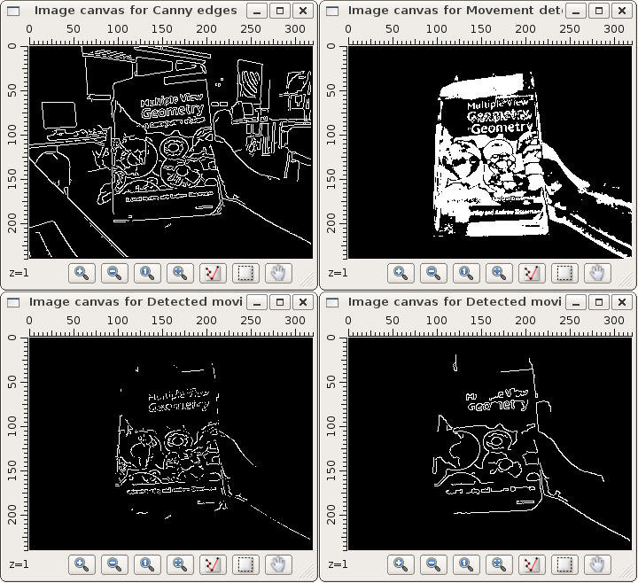
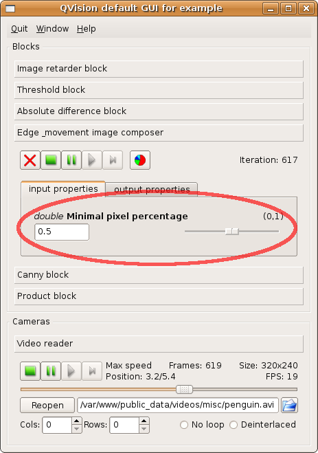

PARP Research Group
PARP Research Group
| PARP Research Group |
Universidad de Murcia |
Creating custom processing blocksIn the QVision toolkit, all the block objects are created from subclasses of a common parent class, the QVProcessingBlock class. This class is itself a subclass of the QVPropertyContainer class. The latter can be used to create dynamic property container objects. Dynamic properties make possible the dynamic linking between the data processing blocks. Like the typical object data members, added to the objects at compilation time, these properties are referenced by a name, and contain data values of a certain type. Unlike the typical object data members, these properties can be created (using the QVPropertyContainer::addProperty() method) and deleted (using the QVPropertyContainer::removeProperty() method) while the application is running, at execution time. The QVProcessingBlock defines the virtual method QVProcessingBlock::iterate(). It must be implemented in the subclasses of the QVProcessingBlock class, to contain the code of the algorithm for the processing blocks it creates. This method is called every time the processing block receives new input data to process. Whenever that happens, the input data is temporarily stored at some of the dynamic properties contained at the block object. The QVProcessingBlock::iterate() method must read those values, operate with them to produce the output data, and store it inside other dynamic properties contained at the block object, different than those used to store the initial input values. For example, the iterate method of class QVCannyEdgeDetector does the following sequence:
Creating a custom processing block for the moving edges exampleWe will illustrate the creation of a custom processing block and its usage in a QVision application, by extending the moving edge detector described at section An advanced block-oriented example. We will improve its performance by adding a new processing block, that will combine the edge response image and the movement response image, better than the multBlock did. The moving edge detector algorithm implemented in that application obtains segmented and short edges. This is so because the multBlock performs a pixel-wise combination of the edge and movement response images. We will add a user defined block to the application that will process as a whole each edge detected by the Canny algorithm. It will identify moving edges as those containing a high percentage of pixels active in the movement response image. To create the new processing block object, a new block class must be created. It will have the following header: #include <qvip.h> #include <QVPolyline> class MovingEdgesDetector: public QVProcessingBlock { public: MovingEdgesDetector(QString name); void iterate(); }; The constructor of that class must create the dynamic properties of the block object. These properties must at least store the input and the output data of the block. The constructor will create two input properties that will store the input edge and movement response images respectively: Edge response image and Movement response image. Also the constructor will create one output property in the block object to store the output moving borders image response, named Moving borders image: MovingEdgesDetector::MovingEdgesDetector(QString name): QVProcessingBlock(name) { addProperty< QVImage<uChar,1> >("Edge response image", inputFlag); addProperty< QVImage<uChar,1> >("Movement response image", inputFlag); addProperty< QVImage<uChar,1> >("Moving borders image", outputFlag); } This will be the the iterate method of the class: void MovingEdgesDetector::iterate() { // 1. Read the input values and algorithm parameters const QVImage<uChar,1> movementResponseImage = getPropertyValue< QVImage<uChar,1> >("Movement response image"), edgeResponseImage = getPropertyValue< QVImage<uChar,1> >("Edge response image"); const double minimalPixelPercentage = 0.5; // 2. process the input values with the input parameter values. // 2.1. Obtain the list of moving edges as a polyline list. // 2.1.1. Get the list of edges from the edge response image, as a list of polylines: const QList< QVPolyline > edges = getLineContoursThreshold8Connectivity(edgeResponseImage, 128); // 2.1.2. For each edge, test if a percentage high enough of its pixels is active in the // movement response image. If so, store it in the list of moving image borders. QList< QVPolyline > movingImageBorders; foreach(QVPolyline edge, edges) { int count = 0; foreach(QPoint edgePoint, edge) if (movementResponseImage(edgePoint) != 0) count++; if (count >= minimalPixelPercentage * edge.size()) movingImageBorders << edge; } // 2.2. Create the moving edge response image from the list of moving edges. // 2.2.1. Create the image with the same size as the movement response image. QVImage<uChar,1 > movingBordersImage(movementResponseImage.getCols(), movementResponseImage.getRows()); // 2.2.2. Initialize the pixels of the image to zero Set(0, movingBordersImage); // 2.2.3. Draw each polyline contained in the moving image edges at the output image. foreach(QVPolyline edge, movingImageBorders) foreach(QPoint edgePoint, edge) movingBordersImage(edgePoint) = 255; // 3. Store the resulting image in the output property setPropertyValue< QVImage<uChar,1> >("Moving borders image", movingBordersImage); timeFlag("Publish resulting images"); } It is divided in three sections. The first (point 1.) reads both the edge response image and the movement response image from the input properties. The second section (point 2.) process those input images, to generate the output moving edges response image (movingBordersImage). This section is divided in two tasks: first, it detect the edges in the image, containing a high number of pixels active in the movement response image (point 2.1.). Second, prints those edges in the output image (point 2.2.). The last section (point 3.) stores the resulting image movingBordersImage in the output property Moving borders image. Once the class is complete, we can use it in the main function to create the moving edge detector object. We should link the output properties Output image and qvimage_pDst from the Canny edge detector block and the threshold block respectively, to the input properties Edge response image and Movement response image of the moving edge detector object. This is similar to what we did at the application example described in section An advanced block-oriented example, to make the multBlock object receive edge and movement response images from the Canny edge detector and the threshold blocks: We also create the image canvas movingEdgesDisplayer2 to display the moving edges detected with the new block movingEdgesDetector, an connect it the same manner as we did with the multBlock one and the image canvas movingEdgesDisplayer in the original example application: MovingEdgesDetector movingEdgesDetector("Edge & movement image composer"); QVImageCanvas movingEdgesDisplayer2("Detected moving edges 2"); cannyBlock.linkProperty("Output image", &movingEdgesDetector, "Edge response image", QVProcessingBlock::SynchronousLink); compareCBlock.linkProperty("qvimage_pDst", &movingEdgesDetector, "Movement response image", QVProcessingBlock::SynchronousLink); movingEdgesDetector.linkProperty("Moving borders image", movingEdgesDisplayer2); In the following image can be seen the difference between the moving edges detected using the original multBlock (image canvas on the bottom left), and the new movingEdgesDetector block (image canvas on the bottom right). The new technique implemented in the MovingEdgesDetector obtains long edges, instead of segmented and small edges:

Adding input parametersOnce our new moving edge detector algorithm is implemented, we might want to test and refine it. The algorithm has one parameter: minimalPixelPercentage. It represents the minimal percentage of pixels active in the movement response image that an edge must contain to be stored by the algorithm in the list of moving edges. For now, that value is read from a constant double variable (const double in the body of the iterate method. We might be interested in creating an input dynamic property for that parameter. By doing so, the user will be able to set the initial value for it at the input command line, and modify its value through the GUI during the execution of the application. Dynamic properties registered in an object can be inspected at execution time: the method QVPropertyContainer::getPropertyList() returns a name list of the properties registered at the property container. This is specially useful to create classes in the QVision capable of detecting the properties registered in a processing block object. For example, the QVDefaultGUI detects at the blocks of the application the numerical, boolean, and string properties, and offers sliders, checkboxes and text widgets to inspect and modify their value at execution time. Also, this feature is used by the QVApplication object when parsing the input command line parameters, allowing the user to specify an initial value for numerical or string input properties of the blocks created in the application. To convert the minimalPixelPercentage variable in a block parameter (that is, an input property), first we add the following line at the constructor of the MovingEdgesDetector class: addProperty< double >("Minimal pixel percentage", inputFlag, 0.5, "Minimal percentage of moving pixels for an edge", 0.0, 1.0); Next we substitute the following line at the iterate method: const double minimalPixelPercentage = 0.5; For this one: const double minimalPixelPercentage = getPropertyValue< double >("Minimal pixel percentage"); Making the iterate method read the value for the minimalPixelPercentage variable from the input property Minimal pixel percentage. When running the application, the control window will display a new input widget in the tab for the Edge & movement image composer block, that allows to modify the value for that parameter at execution time:

For further info about the control widget, see QVDefaultGUI. If the --help command line parameter is used when launching the application from the console, the command line options for the Edge & movement image composer block will include the initial value for the Minimal pixel percentage property: # ./blockExample --help Usage: blockExample [OPTIONS] Example program for QVision library. Obtains several features from input video frames. ... Input parameters for Edge & movement image composer: --max block iterations=[int] (def. -1) ............Maximal number of iterations to execute block. --stats enabled=[true,false] (def. true) ....................Block CPU stats are enabled/disabled. --stats printing frequency=[int] (def. 0) .......Frequency to print CPU statistics (in iterations). --Minimal pixel percentage=[0...1] (def. 0.5) .....Minimal percentage of moving pixels for an edge. So the user can start the application specifying a different starting value for that property: # ./blockExample --URL=moving-hartley.mpg --"Minimal pixel percentage"=0.25
For further info about command line parameters, see section Command line parameters. Source of the moving edges detectorThe complete source code of the final version of the moving edges detector can be found in the examples/movingEdgesDetector directory, included with the actual release of the QVision. Click here to see the contents of the source file. |